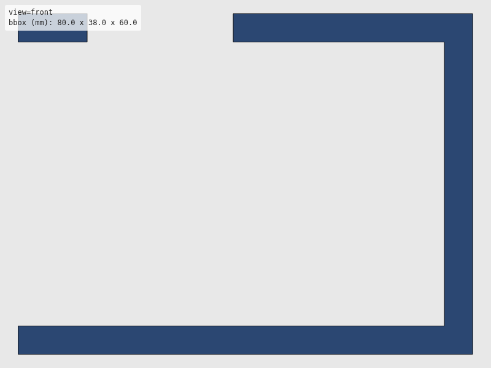
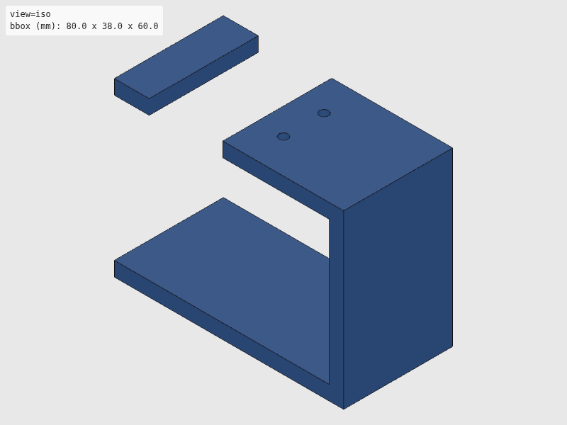
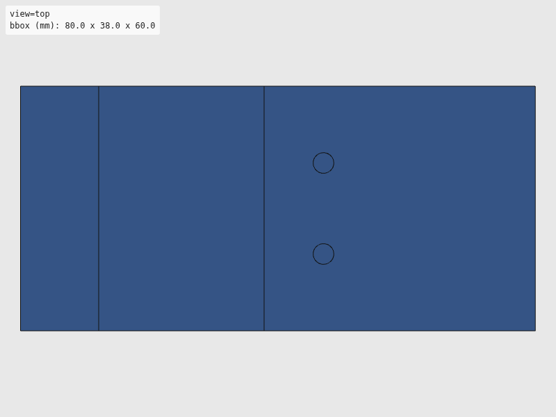
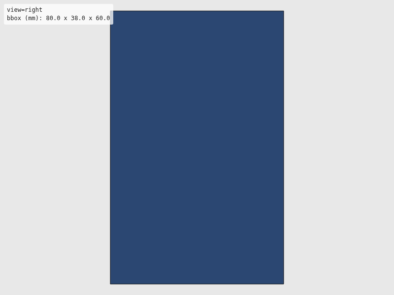

Verdict: review
Green is necessary, not sufficient: these checks cannot see local defects. Look at the render and decide.




The intent as written, for comparison with the renders. Not checked.
"""dPette+ mount bracket + cam arm for SO-101.
Two printed parts:
1. U-bracket mount — top bar bolts to M5 horn, vertical side holds M6
motor, bottom bar clamps pipette barrel. Rigid frame, no flex.
2. Straight cam arm — on M6 horn, sweeps sideways into ejector hook.
Side view (matches draw.io diagram):
==================== <- top bar (bolts to M5 horn)
| |
| [M6]----arm | <- vertical side (holds motor)
| |
==================== <- bottom bar (clamps barrel)
| pipette |
| body |
---------
Motor dims: STS3215 = 45.2 x 24.7 x 35 mm, 25T spline, M2 mount.
Usage:
uv run --group cad python src/hardware/cad/dpette/dpette_handle.py
Ported from Antonio Lamb's CadQuery source (PR #48) to build123d;
geometry and parameters preserved as faithfully as possible. Cylinder
placements use intent-based positioning (hole at nominal target) rather
than byte-matching CadQuery's extrude-from-zero + rotateAboutCenter
semantics.
"""
import math
import sys
from pathlib import Path
from build123d import Box, Cylinder, Pos, Rot
sys.path.append(str(Path(__file__).resolve().parent.parent))
from util.export import export_part
sys.path.pop()
# --- STS3215 servo ---
MOTOR_W = 24.7
MOTOR_L = 45.2
MOTOR_H = 35.0
M2 = 2.2
HORN_DIA = 24.0
HORN_BORE = 6.0
HORN_THICK = 3.0
HORN_SCREW = 2.2
HORN_BOLT_CIRCLE = 16.0
# --- dPette+ barrel ---
BARREL_D = 20.0
BARREL_CL = 0.3
# --- U-bracket dims ---
BAR_W = 80.0 # Width of top and bottom bars (X)
BAR_D = 38.0 # Depth of bars (Y)
BAR_T = 5.0 # Thickness of bars (Z)
SIDE_W = 5.0 # Vertical side wall thickness (X)
SIDE_H = 50.0 # Distance between top and bottom bars (Z)
# --- Positions ---
MOTOR_X = -15.0 # Motor offset in bracket
BARREL_X = 18.0 # Barrel offset in bracket
# --- M5 horn bolt pattern (top bar) ---
M5_BOLT_CIRCLE = 20.0
M3 = 3.2
# --- Barrel clamp (bottom bar) ---
CLAMP_BOLT = 3.2
# --- Straight cam arm ---
# #44: CAM_LENGTH 32→40 (torque), CAM_T 4→6 (flex/break resistance),
# CAM_TIP_R 2→3 (wider contact surface)
CAM_LENGTH = 40.0
CAM_W = 6.0
CAM_T = 6.0
CAM_TIP_R = 3.0
def build_mount_bracket():
"""U-bracket: top bar + vertical side + bottom bar."""
# Top bar — centered in XY, sitting above Z=SIDE_H
top = Pos(0, 0, SIDE_H + BAR_T / 2) * Box(BAR_W, BAR_D, BAR_T)
# Bottom bar — centered in XY, sitting below Z=0
bot = Pos(0, 0, -BAR_T / 2) * Box(BAR_W, BAR_D, BAR_T)
# Vertical side wall on the right, connecting top and bottom bars
side_x = BAR_W / 2 - SIDE_W / 2
side = Pos(side_x, 0, SIDE_H / 2) * Box(SIDE_W, BAR_D, SIDE_H)
bracket = top + bot + side
# Top bar: 4x M3 clearance holes on a circular bolt pattern (M5 horn mount)
for i in range(4):
a = math.radians(i * 90 + 45)
bx = M5_BOLT_CIRCLE / 2 * math.cos(a)
by = M5_BOLT_CIRCLE / 2 * math.sin(a)
hole = Pos(bx, by, SIDE_H + BAR_T / 2) * Cylinder(M3 / 2, BAR_T + 2)
bracket = bracket - hole
# Top bar: motor pocket (recessed rectangle) — cuts through the top bar
pocket = Pos(MOTOR_X, 0, SIDE_H + BAR_T / 2) * Box(MOTOR_W + 1, MOTOR_L + 1, BAR_T + 1)
bracket = bracket - pocket
# Top bar: horn shaft exit hole (round)
horn_exit = Pos(MOTOR_X, 0, SIDE_H + BAR_T / 2) * Cylinder(HORN_DIA / 2 + 1, BAR_T + 2)
bracket = bracket - horn_exit
# 2x M2 motor mount holes — horizontal through the vertical side wall
motor_z = SIDE_H - MOTOR_H / 2
for z_off in (-8, 8):
hole = Pos(side_x, 0, motor_z + z_off) * Rot(0, 90, 0) * Cylinder(M2 / 2, SIDE_W + 10)
bracket = bracket - hole
# Bottom bar: barrel bore (through-hole)
bore = Pos(BARREL_X, 0, -BAR_T / 2) * Cylinder((BARREL_D + BARREL_CL * 2) / 2, BAR_T + 2)
bracket = bracket - bore
# Bottom bar: pinch bolt — horizontal through along Y, at barrel X
pinch = Pos(BARREL_X, 0, -BAR_T / 2) * Rot(90, 0, 0) * Cylinder(CLAMP_BOLT / 2, BAR_D + 10)
bracket = bracket - pinch
# Bottom bar split — a thin slot so the barrel bore can be clamped shut
split = Pos(BARREL_X, 0, -BAR_T / 2) * Box(1.5, BAR_D + 2, BAR_T + 2)
bracket = bracket - split
return bracket
def build_cam_arm():
"""Straight radial arm on M6 horn. Sweeps into ejector hook."""
# Horn disc — centered at origin, extends +Z from 0 to HORN_THICK
horn = Pos(0, 0, HORN_THICK / 2) * Cylinder(HORN_DIA / 2, HORN_THICK)
# Through-bore for M6 shaft + center screw
bore = Pos(0, 0, HORN_THICK / 2) * Cylinder(HORN_BORE / 2, HORN_THICK + 2)
horn = horn - bore
# Center screw hole — extra small cylinder overlay (matches CadQuery double-hole idiom)
screw = Pos(0, 0, HORN_THICK / 2) * Cylinder(HORN_SCREW / 2, HORN_THICK + 2)
horn = horn - screw
# 4x horn bolt pattern holes
for i in range(4):
a = math.radians(i * 90)
hx = HORN_BOLT_CIRCLE / 2 * math.cos(a)
hy = HORN_BOLT_CIRCLE / 2 * math.sin(a)
hole = Pos(hx, hy, HORN_THICK / 2) * Cylinder(HORN_SCREW / 2, HORN_THICK + 2)
horn = horn - hole
# Straight arm — extends along +Y from the edge of the horn
arm_y = HORN_DIA / 2 + CAM_LENGTH / 2 - 2
arm = Pos(0, arm_y, CAM_T / 2) * Box(CAM_W, CAM_LENGTH, CAM_T)
# Contact tip at the arm end — cylinder aligned with Z for clean SVG projection
# (sphere tips cause build123d 2D projection to fail)
tip_y = HORN_DIA / 2 + CAM_LENGTH - 2
tip = Pos(0, tip_y, CAM_T / 2) * Cylinder(CAM_TIP_R, CAM_T)
return horn + arm + tip
if __name__ == "__main__":
export_part(build_mount_bracket(), "dpette", "dpette_handle")
export_part(build_cam_arm(), "dpette", "dpette_cam_arm")
| Check | Status | Detail |
|---|---|---|
| file_integrity | PASS | binary STL: header present, 1056 triangles, file length matches 84 + 50*n |
| watertight | PASS | watertight=True, winding_consistent=True, euler_number=0 (reported only, not asserted — plan §7.2) |
| bbox | SKIP | no --envelope given |
| volume | SKIP | no --volume-band given |
| browser_load | PASS | viewer reported body[data-state]=rendered |
| render | PASS | 4 view(s) captured at 800x600 |